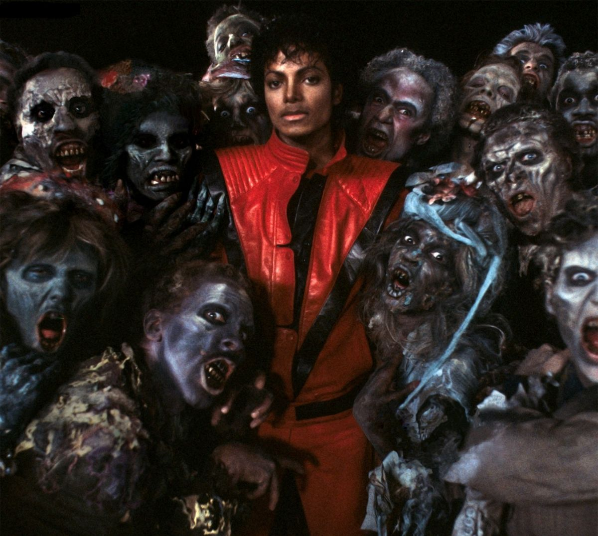
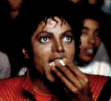

¡Its Spooky Season! Pero Michael Jackson hizo los 80s un interminable "Thriller" que retumba al mencionar su nombre. El Rey del Pop domino los 80 como su propio reino siendo 1983 el año donde se presencio por primera vez el MOONWALK. Luego un año despues fue ganador de 8 GRAMMYS en LA MISMA NOCHE. Y si hablamos de MICHAEL debemos hablar de la gran noche del pop en 1985 en donde reunio a 46 estrellas de la musica para una sola causa, presentar al mundo "We Are The World".


Haz click